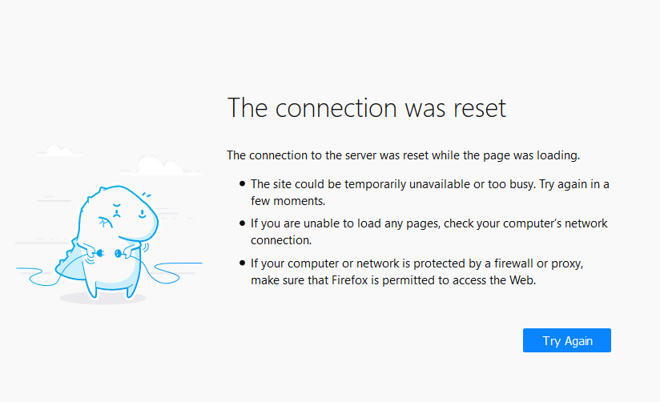

突破網路長城
“翻牆”是什麼？
根據 Wikipedia, “翻牆”又叫“突破網路審查”，是通過多種方法來規避網路審查的行為。
為什麼要“翻牆”？
當你在閱讀這篇文章的時候，你應該已經意識到了“牆”的存在：

防火牆，一個知名的例子是防火長城，會檢測並切斷特定的連線。
上圖展現的是一個“連線被重置”錯誤資訊。“連線重置”是防火長城常使用的一個封阻手段：你在訪問網站之前，需要先和目標網站建立一個連線。除了特殊例外，中國的所有國際出口連線均經過防火長城。當防火長城檢測到應該被禁止的連線，會在中途假裝目標伺服器向客戶端傳送“連線重置”指令，使得客戶端以為另一端中止了連線。客戶端因此也中止連線，防火長城對連線的阻斷達成。
繼續以防火長城為例，防火長城的目的是維護中國政府對網路資訊的審查。其封阻的網站和服務包括但不限於未遵守中國政府審查的社交媒體、“色情”、“恐怖”、以及對中國政府不利的新聞和政治宣傳。要訪問這些網站和服務，你需要繞過防火牆的審查。
代理工具如何“翻牆”？
“代理伺服器”是一種常見的翻牆方式。其基本原理是通過一箇中間人把資訊送達目標地址（網站、服務...）。
來源，由 noarch 翻譯
{kind=link}
從上圖可以看出，“代理”是資訊交換過程中的“中間人”。在使用代理訪問“被牆”網站的時候，向被牆網站的請求先經過代理伺服器，而這個代理伺服器並沒有“被牆”，可以訪問。該代理伺服器本身也在“牆外” - 它處於中國大陸之外，並不受審查。通過一個沒有“被牆”，也不受牆管理的代理伺服器中轉，你就可以訪問被牆的網站和服務了。
“翻牆”的安全性如何？
目前可用的，商業和開放的“翻牆”技術都能以加密來保證你的資訊保安。你的代理流量會被以不同的形式加密傳輸，保證除了你的裝置和代理伺服器之外沒有人能竊取你的代理流量。以 AES-128（一種加密演算法） 為例，除了使用旁路攻擊及社會工程攻擊（例如詐騙、審問金鑰擁有者），理論上攻擊者需要窮舉高達 2128 個金鑰來破解 AES-128 加密。
你可能會有疑問，如果我的代理提供者想要竊取我的資訊呢？
如果你在訪問一個 HTTPS 加密的網站，你不用擔心代理提供者竊取你的資訊。這層 HTTPS 加密只有你和你訪問的網站能解密 - 即使是你的代理提供商也不能解密你和其它 HTTPS 網站的流量。如果你在通過代理通話，以 Telegram 為例，Telegram 的語音和視訊通話是端到端加密的：這意味著只有你和電話另一邊的人能解密這個通話。無論是你的代理提供者，還是 Telegram 官方都無法解密你的通話內容。
比起破解代理通道的內容，防火牆更傾向使用“流量特徵識別”。防火牆通過資料包分析等方法區分代理流量與其它瀏覽流量；當防火牆識別到大量非正常流量時，會對流量的目標，也就是代理伺服器進行封鎖。
資料混淆是一種反制流量特徵識別的方法；通過混淆，代理流量被偽裝成正常的瀏覽流量，繞過防火牆的檢測。以 ShadowsocksR 使用的 tls1.2_ticket_auth 為例，它將代理資料偽裝成 TLS 協議的握手請求，以欺騙防火牆。
“翻牆”後不要做什麼？
下面總結一些人們在“翻牆”後常犯的一些錯誤：
通過代理登入牆內的帳號。 這相當於向監控者宣佈“我在使用代理”。
在牆外的帳號上使用與牆內帳號一樣的資訊， 或者在牆外社交平臺上公佈自己牆內的資訊。這相當於向監控者宣佈“這是我的牆外帳號，我在牆外發布了***”。
通過公共代理進行 P2P 傳輸。 大多數（尤其是免費的）代理提供商禁止例如“種子”下載的 P2P 傳輸。除非代理提供商特別宣告允許，嘗試這樣做可能會導致種子下載失敗，甚至是代理帳號被封禁。如果你自己租用伺服器搭建代理，請參考伺服器提供商的條款。
在購買時填寫真實的住址及銀行卡。 如果你遇到了一個監控者運營的釣魚網站，你將會遇到不可預測的後果。如果你需要在牆外購買真實物品，請使用代購或填寫郵件代收站的地址，並使用虛擬信用卡或加密貨幣。
允許輸入法聯網。 商業的輸入法大多數包含“雲輸入”功能，該功能會將你輸入的內容上傳至輸入法提供商的伺服器上進行分析。當你用它們輸入“敏感詞”時會帶來不可預料的後果。
使用“防毒軟體”。 得益於封閉的安全策略， Android 裝置在絕大多數情況下不需要“防毒軟體”。任何的商業 Android “防毒軟體” 均是為了向你展示廣告以及監控你的活動。
公開分享你的代理伺服器資訊。 除非有特殊準備，嚴禁公開發布你的代理伺服器（或是代理服務帳號）資訊。這些資訊可以幫助監控者找出你的身份。
進行未加密的連線。 在進行未加密的連線時（例如訪問使用明文 HTTP 協議的網站），你的代理提供者（在使用 Tor 時，是你的 "Exit Guard"）將能竊取和修改你傳送和接收到的資訊。